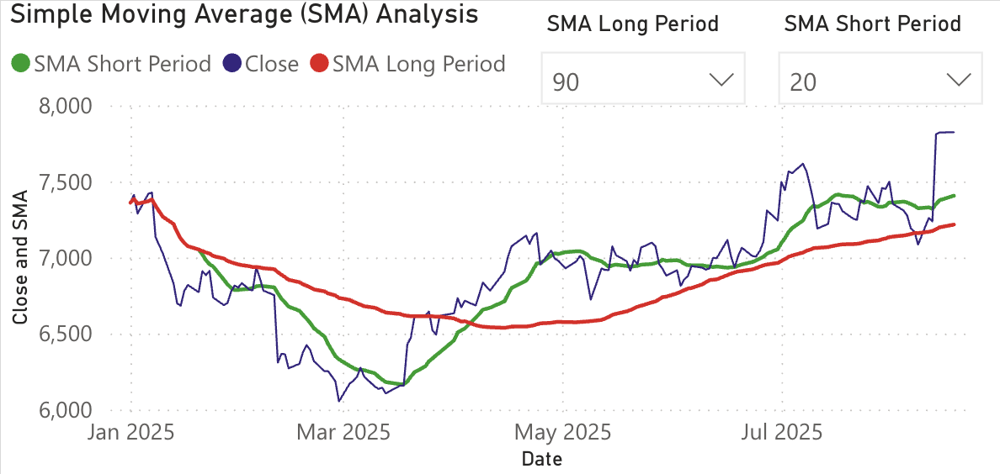

Simple Moving Average (SMA): Complete Beginner-Friendly Guide
The Simple Moving Average (SMA) is one of the most basic yet powerful tools in technical analysis. If you are new to stock trading, SMA is the perfect starting indicator to understand trends, reversals and entry/exit signals. In this blog we will explore how SMA works, how to use short-term & long-term SMA lines, strategies, examples and real trading applications.
What is a Simple Moving Average (SMA)?
SMA is the average closing price of a stock over a specific number of days. For example:
10-Day SMA = Average closing price of last 10 days
If the price is above SMA → trend is bullish. If the price is below SMA → trend is weakening or bearish.
How to calculate SMA? (Simple Example)
Suppose the last 5 closing prices of a stock are:
- Day 1: ₹100
- Day 2: ₹102
- Day 3: ₹104
- Day 4: ₹103
- Day 5: ₹105
5-Day SMA = (100 + 102 + 104 + 103 + 105) ÷ 5 = 102.8
Now on charts, SMA moves with price. When price jumps, SMA curves upward. When price falls, SMA gradually bends down.
Short-Term & Long-Term SMA – What's the difference?
Short-Term SMA → 5-day, 10-day, 20-day (quick reactions to price)
Long-Term SMA → 50-day, 100-day, 200-day (used for trend direction)
Short-term SMA shows trend momentum.
Long-term SMA shows trend direction & strength.
How traders use SMA to trade?
Standard setups & signals — click to expand
1. Golden Cross (Buy Signal)
- 50-day SMA crosses above 200-day SMA
- Indicates long-term uptrend strength
2. Death Cross (Sell Signal)
- 50-day SMA crosses below 200-day SMA
- Signals weakness and downtrend possibility
3. Short/Long SMA cross (fast reaction) — Traders often use pairs like 20 & 50 or 10 & 50 to spot medium-term shifts.
4. SMA as dynamic support/resistance — Price frequently finds support at the 50-day SMA in strong uptrends and resistance at the 50-day SMA in downtrends.
Example: If Nifty closes above its 50-day SMA for several days with rising volume, the 50-day now acts as support — pullbacks to it can be low-risk entries.
Using SMA for Nifty 50 Stocks
Practical notes for index & large-cap stocks — click to expand
Nifty 50 stocks move smoothly due to high liquidity, making SMA very effective. Traders commonly use:
- 20-50 SMA for swing trades
- 50-200 SMA for long-term investing
On weekly charts, SMA reduces noise even further and helps identify strong long-term trends.
Tip: When a stock's daily 20 SMA crosses above its daily 50 SMA while weekly SMAs are aligned bullishly, the setup is stronger.
Limitations of SMA
Common mistakes & limitations — click to expand
1. SMA is slow in fast-moving markets — it reacts after price moves. Using a shorter SMA can help but increases noise.
2. Sideways markets produce false signals. Many crossovers will occur without sustained trends.
3. Not for intraday scalping alone — better when combined with RSI, volume or MACD.
Always pair SMA signals with price action, support/resistance, or volume confirmation.
Advanced tips
Improve reliability of SMA-based trades — click to expand
1. Multiple timeframe confirmation — a bullish signal on both daily and weekly charts provides stronger conviction than on only one timeframe.
2. Use SMA as trend filter — Example: only take long trades when price is above the 200-day SMA; ignore bullish crossovers below the 200-day SMA.
3. Combine with volume — Crossovers or Golden/Death Crosses accompanied by rising volume are more trustworthy.
4. Backtest your chosen settings — test 10/50, 20/50, 50/200 combinations on past Nifty data before relying on them.
Example: A simple SMA trade (step-by-step)
Scenario: A swing trader uses 20-day (short) and 50-day (long) SMAs on a daily chart.
- Wait for 20-day SMA to cross above the 50-day SMA (bullish cross).
- Confirm price is above the 200-day SMA (long-term trend filter).
- Look for a pullback toward the 20 or 50 SMA with a small bullish reversal candle.
- Enter long with stop-loss a few percent below the recent swing low or the 50-day SMA (whichever is tighter).
- Trail stop or scale out as price moves in your favor.
Key risk control: position sizing, clear stop-loss, and exit rules — SMA helps time entries but does not replace risk management.
Note: This content is educational, not financial advice. Always research before investing.
Try our Live Nifty 50 Dashboard — Free Technical Charts